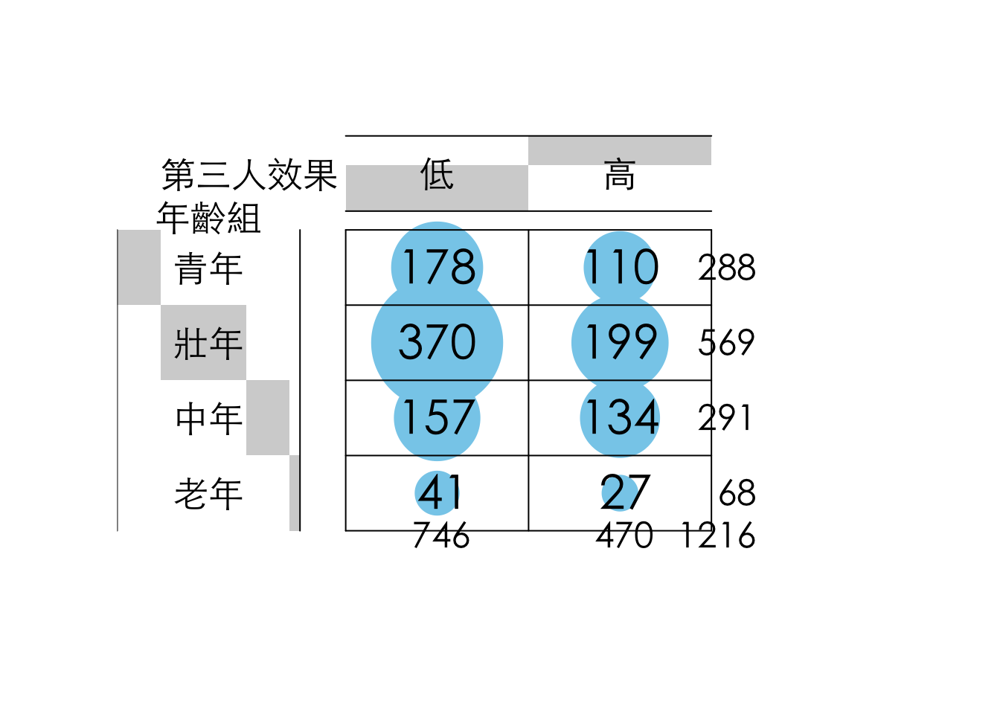

Chapter 8 Categorical Data Analysis
8.1 Survey Analysis
國外不少媒體會用智庫或者學術單位所發佈的調查結果作為資料新聞素材，我們所曾經處理過的華盛頓郵報的產假支薪案例也是。以下為該案例資料的截圖。matleave_95代表1995年的資料，每個變數的數據1至5分別代表產假時給付薪水的月數區間共有五個區間。區間大小通常需要查看編碼簿來獲取定義。
這類資料由於採用數字（其實是Factor）來替代類別，通常隨著數據會釋出該調查的編碼簿（Code Book），這個案例的編碼（1至5）如下：
8.2 The Case: Misinformation Perception
這個範例涵括了在做問卷分析時常用的處理步驟。最核心的步驟是將文字陳述的類別資料轉換為便於後續運算的factor或數值資料。如果類別數量過多的時候，在這個過程會順便進行重新分組。例如依照年齡組把填答者分為老年、中壯年、青少年、兒童四組。
## # A tibble: 6 × 6
## Q7 Q8 QAParty QASide QA3 QA4
## <chr> <chr> <chr> <chr> <chr> <chr>
## 1 會 絕對會 民主進步黨 非常接近泛綠 25-29 研究所及以上
## 2 會 絕對會 沒有政黨偏好 接近泛藍 35-39 研究所及以上
## 3 不會 絕對會 沒有政黨偏好 接近泛綠 35-39 大專（專科與大學）
## 4 會 會 台灣民眾黨 接近泛綠 20-24 大專（專科與大學）
## 5 不會 不會 民主進步黨 非常接近泛綠 45-49 研究所及以上
## 6 會 絕對會 沒有政黨偏好 非常接近泛藍 25-29 大專（專科與大學）8.3 Ordered-factor
通常問卷會分為兩種類型的資料，一種是人口統計用的基本資料（如性別、年齡組、教育程度）、另一種是問卷本身要問的題項。以下是常見的問卷型態，包含把年齡從20歲開始每五年作為一組，70歲以上則歸類為一組，共會有十一組。而教育程度則常分為五至六組，但在問卷設計的時候，通常會需要增加「拒答」的選項。如果問卷中包含政黨意識形態，就必須要決定要以黨派作為類別變項，或者以意識形態做順序尺度。以下即為一個順序尺度的案例，從「非常接近泛綠」到「非常接近泛藍」共五個等第，但另增「拒答」選項。
這些選項如果要進行視覺化的話，他原則上會按照字母順序。英文的話就是字母順序，中文則是按照其內部編碼的順序進行排列。這個內部編碼通常是基於Unicode 或與作業系統的語系設定（locale）相關的編碼方式。但我們往往對於哪些數值在前、哪些在後有一定的規劃，例如從青年、壯年、中年到老年分別代表了由年輕到年長的類別。因此，在視覺化的時候先把這些類別變項轉為Ordered-factor有助於後續處理。
dt <- raw %>%
mutate(QA3 =ordered(QA3, levels = c(
"20-24", "25-29", "30-34", "35-39",
"40-44", "45-49", "50-54", "55-59",
"60-64", "65-69", "70及以上"
))) %>%
mutate(QA3_lv = ordered(QA3,
levels = c(
"20-24", "25-29", "30-34", "35-39",
"40-44", "45-49", "50-54", "55-59",
"60-64", "65-69", "70及以上"
),
labels = c(
"青年", "青年", "壯年", "壯年",
"壯年", "中年", "中年", "中年",
"中年", "老年", "老年"
)
)) %>%
mutate(QA4 = ordered(QA4,
levels = c(
"拒答", "國小及以下", "初中、國中",
"高中、高職", "大專（專科與大學）",
"研究所及以上"
),
labels = c(
"拒答", "國小以下", "國中",
"高中職", "大專", "研究所以上"
)
)) %>%
mutate(QASide = ordered(QASide,
exclude = "拒答",
levels = c(
"非常接近泛綠", "接近泛綠",
"都不接近", "接近泛藍", "非常接近泛藍"
)
))8.3.1 Covert to ordered-factor
在一開始清理資料的時候，會建議先把類別變數（通常是文字型態）轉為factor型態，此時是用factor()來轉。但如果要轉為Ordered-factor的話，則要用mutate()搭配ordered()來改變變數型態。ordered()會照類別順序來標定該factor所對應到的數字。可以用as.integer()將factor轉為整數後就可以看到各類別的順序。
mutate(dt, QA3 = factor(QA3, levels=c("20-24", "25-29", "30-34", "35-39",
"40-44", "45-49", "50-54", "55-59",
"60-64", "65-69", "70及以上")))
mutate(dt, QA3 = ordered(QA3, levels=c("20-24", "25-29", "30-34", "35-39",
"40-44", "45-49", "50-54", "55-59",
"60-64", "65-69", "70及以上")))## [1] 25-29 35-39 35-39 20-24 45-49 25-29 30-34 20-24 20-24 55-59
## 11 Levels: 20-24 < 25-29 < 30-34 < 35-39 < 40-44 < 45-49 < 50-54 < ... < 70及以上## [1] 2 4 4 1 6 2 3 1 1 88.3.2 Excluding
如果有某些類別變數的值（如「拒答」）不想被編入factor，可以在ordered()中加入exclude的參數指定不想被編入類別值。
mutate(QASide=ordered(QASide,
exclude="拒答",
levels=c("非常接近泛綠", "接近泛綠",
"都不接近", "接近泛藍", "非常接近泛藍")))## [1] 非常接近泛綠 接近泛藍 接近泛綠 接近泛綠 非常接近泛綠
## [6] 非常接近泛藍 接近泛綠 接近泛綠 接近泛藍 接近泛綠
## Levels: 非常接近泛綠 < 接近泛綠 < 都不接近 < 接近泛藍 < 非常接近泛藍## [1] 1 4 2 2 1 5 2 2 4 28.3.3 Grouping-up
如果有某些類別變數的類別過多，希望再次群組化為較少的組別，如重新群組各年齡層為青年、壯年、中年與老年四個尺度。此時除了levels參數外，可以另外加入labels的參數，指定每個類別變數值所要對應到的群組。以下為群組後的結果，仔細觀察剩下多少個尺度。
mutate(QA3_lv = ordered(QA3,
levels=c("20-24", "25-29", "30-34", "35-39",
"40-44", "45-49", "50-54", "55-59",
"60-64", "65-69", "70及以上"),
labels = c("青年", "青年", "壯年", "壯年",
"壯年", "中年", "中年", "中年",
"中年", "老年", "老年"))) %>%## [1] 25-29 35-39 35-39 20-24 45-49 25-29 30-34 20-24 20-24 55-59
## 11 Levels: 20-24 < 25-29 < 30-34 < 35-39 < 40-44 < 45-49 < 50-54 < ... < 70及以上## [1] 2 4 4 1 6 2 3 1 1 8## [1] 青年 壯年 壯年 青年 中年 青年 壯年 青年 青年 中年
## Levels: 青年 < 壯年 < 中年 < 老年8.4 Order-to-factor
- Q7 請問您會不會受到假消息影響？
- Q8 請問您認為其他人會不會受到假消息的影響？
對於Q7、Q8的問題是詢問填答者認為自己或他人會不會受到假消息影響，並從「一點也不會」、「不會」、「會」到「絕對會」共分四個等第。Q7分別是「81, 446, 650, 39」、Q8分別是「5, 58, 803, 350」。相較於Q7，Q8的分佈略為左傾，亦即傾向於認為其他人較容易受影響。此時如果想要分析Q7和Q8間的關係，由於各有四個等第，其交叉分析表會有16個項目，相當難以分析。
dt2 <- dt %>%
mutate(Q7 = ordered(Q7, levels = c("一點也不會", "不會", "會", "絕對會"))) %>%
mutate(Q8 = ordered(Q8, levels = c("一點也不會", "不會", "會", "絕對會"))) %>%
mutate(Q7_3rd = as.numeric(Q8) - as.numeric(Q7)) %>%
mutate(Q7_3rd_lv = ifelse(Q7 %in% c("一點也不會", "不會") & Q8 %in% c("會", "絕對會"), "高", "低")) %>%
mutate(Q7_3rd_lv = ordered(Q7_3rd_lv, levels = c("低", "高")))這時候一種策略是把這兩題視為順序尺度變數，然後把兩題的分數相減。相減後的分數從「-1, 0, 1, 2, 3」各有「12, 482, 600, 103, 19」，不難猜到會是一個較為集中的分佈，後續僅能當作順序尺度或連續變項來分析，不適合找一個閾值轉類別變項。
另一種策略是，分別先把Q7與Q8的「一點也不會」和「不會」群組為「不會」、再把「會」與「絕對會」群組為「會」，這樣Q7與Q8的交叉分析表會變成2X2的分析表，雖然群組數量比較少，但別忘記Q7的填答結果集中在會與不會、而Q8為一個較為偏右的分佈，集中在「會」和「絕對會」。Q8勢必會造成比例不均的分組。
## # A tibble: 5 × 2
## `as.integer(Q8) - as.integer(Q7)` n
## <int> <int>
## 1 -1 12
## 2 0 482
## 3 1 600
## 4 2 103
## 5 3 19最後這題所採行的策略是，做高、低第三人效果分組，也就是根據認為自己「一點也不會」、「不會」受影響，而他人「會」或「絕對會」受影響的重新群組為「高第三人效果組」，其他則為「低第三人效果組」。亦即，分組的一句是在對自己與他人的認知上，無模糊空間的分組方法（也就是認為自己至少不會，和認為別人應該會）。
## # A tibble: 2 × 2
## Q7_3rd_lv n
## <ord> <int>
## 1 低 746
## 2 高 4708.5 Cross-tabulating
在R語言中，xtabs()是一個用於建立交叉表（cross-tabulation）的函數。它可以將資料中的變數進行交叉分類，並計算每個交叉組合的頻次或其他統計量。
chisq.test(xtb)分析結果指出
X-squared（卡方值）等於10.017，df（自由度）等於3，p-value（p值）等於0.01842。
這個結果顯示在這個交叉表中，
QA3_lv（年齡層）Q7_3rd_lv（第三人效應）間的分類狀態並非完全獨立，而是存在某種統計上的關聯性。由於p值小於我們事先選定的顯著性水準（通常為0.05），我們可以拒絕虛無假設（兩個變數獨立），並認為這個關聯性是統計上顯著的。
對於vcd::assocstats(xtb)的分析結果，這些統計量用於評估QA3_lv和Q7_3rd_lv之間的關聯性程度。連續性係數和克拉瑪爾 V 的值都較低（接近 0），這表示 QA3_lv 和 Q7_3rd_lv 之間的關聯性較弱，但根據卡方檢定的結果，這種微弱的關聯性在統計上仍然是顯著的。
- Likelihood Ratio X^2： 這是概似比卡方檢定（Likelihood Ratio Chi-squared test）的統計量，用於檢驗獨立性，在這個例子中與皮爾森卡方檢定的結果非常接近。
- Pearson X^2： 這與
chisq.test()輸出的卡方值相同。 - df： 自由度，同樣為 3。
- P(> X^2)： 對應的 p 值，也與
chisq.test()的結果一致。 - Phi-Coefficient： 在這個 4x2 的表格中，Phi 係數不適用，因此顯示為 NA。Phi 係數通常用於 2x2 的表格。
- Contingency Coeff. (連續性係數)：0.09 這個值介於 0 和接近 1 之間，數值越大表示關聯性越強。0.09 表明關聯性較弱。
- Cramer’s V (克拉瑪爾V)：0.091 Cramer’s V 是 Phi 係數在行列數大於 2 的表格中的推廣，用於衡量兩個名義變數之間的關聯強度。其值介於 0 和 1 之間，越接近 1 表示關聯性越強。0.091 也表明關聯性較弱。
接下來是chisq.test(xtb)的結果
print(round(chi2$observed, 2))的結果，顯示的是觀察到的頻次（observed frequencies），與使用xtabs()得到的結果完全一致。print(round(chi2$expected, 2))的結果，顯示的是在虛無假設（QA3_lv和Q7_3rd_lv獨立）成立的情況下，每個交叉組合的期望頻次（expected frequencies）。例如，如果年齡層和第三人效應之間是獨立的，我們期望在青年族群中觀察到約 176.68 個第三人效應為「低」的個案。卡方統計量就是基於觀察頻次和期望頻次之間的差異計算出來的。print(round(chi2$residuals, 2))的結果，顯示的是皮爾森殘差（Pearson residuals）。殘差是觀察頻次與期望頻次之間的差異，再除以期望頻次的平方根。它可以幫助我們了解哪些單元格對卡方統計量的貢獻較大。正的殘差表示觀察到的頻次高於期望的頻次，負的殘差表示觀察到的頻次低於期望的頻次。在這個例子中，「壯年」族群中第三人效應為「低」的比例略高於獨立性假設下的期望，「壯年」族群中第三人效應為「高」的比例略低於期望。「中年」族群則呈現相反的模式。
## Q7_3rd_lv
## QA3_lv 低 高
## 青年 178 110
## 壯年 370 199
## 中年 157 134
## 老年 41 27##
## Pearson's Chi-squared test
##
## data: xtb
## X-squared = 10.017, df = 3, p-value = 0.01842## X^2 df P(> X^2)
## Likelihood Ratio 9.9301 3 0.01917
## Pearson 10.0173 3 0.01842
##
## Phi-Coefficient : NA
## Contingency Coeff.: 0.09
## Cramer's V : 0.091## Q7_3rd_lv
## QA3_lv 低 高
## 青年 178 110
## 壯年 370 199
## 中年 157 134
## 老年 41 27## Q7_3rd_lv
## QA3_lv 低 高
## 青年 176.68 111.32
## 壯年 349.07 219.93
## 中年 178.52 112.48
## 老年 41.72 26.28## Q7_3rd_lv
## QA3_lv 低 高
## 青年 0.10 -0.12
## 壯年 1.12 -1.41
## 中年 -1.61 2.03
## 老年 -0.11 0.148.6 Plot
gplots 套件中的 balloonplot() 函數可用來視覺化交叉表（cross-tabulation）中各個類別組合的頻率或比例。 這種圖形化方法可以直觀地呈現兩個類別型變數之間的關係。也就是將之前使用 xtabs() 創建的、關於不同年齡組在不同第三人效果程度上的頻次交叉表 (xtb)，以氣泡圖（balloon plot）的形式視覺化呈現。
corrplot 套件會將卡方檢定產生的殘差矩陣視覺化。通常，corrplot 會使用顏色和形狀（例如圓圈的大小或方向）來表示矩陣中元素的大小和方向。
用顏色表示殘差的正負性： 一種顏色可能代表正殘差（觀察值高於期望值），另一種顏色代表負殘差（觀察值低於期望值）。
用顏色深淺或形狀大小表示殘差的絕對值大小： 顏色越深或形狀越大，表示殘差的絕對值越大，該單元格對卡方統計量的貢獻也越大。
par(family = "Heiti TC Light")
gplots::balloonplot(t(xtb),
xlab = "第三人效果", ylab = "年齡組", main = "",
dotsize = 4 / max(strwidth(40), strheight(40)),
text.size = 1.5, label.size = 2,
rowmar = 1, colmar = 1
)

8.6.1 Plot by ggplot()
xtb %>%
as_tibble() %>%
group_by(QA3_lv) %>%
mutate(fill = if_else(n == max(n), "orangered", "skyblue")) %>%
ungroup() %>%
mutate(QA3_lv = ordered(QA3_lv,
levels = c("青年", "壯年", "中年", "老年")
)) %>%
arrange(desc(QA3_lv)) %>%
ggplot() +
aes(y = QA3_lv, x = Q7_3rd_lv, color = fill, size = n) +
scale_size_area(max_size = 70, guide = "none") +
geom_point(alpha = 0.7) +
scale_color_manual(values = c("orangered", "skyblue"), guide = "none") +
geom_text(aes(
label = n,
vjust = 1.3,
size = 10
), color = "black", ) +
theme_minimal() +
theme(
text = element_text(family = "Heiti TC Light"),
title = element_text(family = "Heiti TC Light")
)